Phase 1b · storyboard for approval
Aira film in the qTrack style: 12 keyframes
Each keyframe on the left is a frame of the real Aira timeline (reduced UI on the qTrack shell, live text, traced map). On the right is the matching moment from the live qTrack film, so the style match can be judged. The screens supply the story and the copy only.
| Chapter | Label | Start | Lift-out | Micro-label |
|---|
| 1 · During the visit | ch1 | | Capture card | Saved to national EMR · coded |
| 2 · In real time | ch2 | | Recommendation card | none |
| 3 · After the visit | ch3 | | LIVE call row | none |
| 4 · Across facilities | ch4 | | Malaria · Mocuba chart | Data stays in-country |
| Loop | end | | everything lifts out, shell fades, loop |
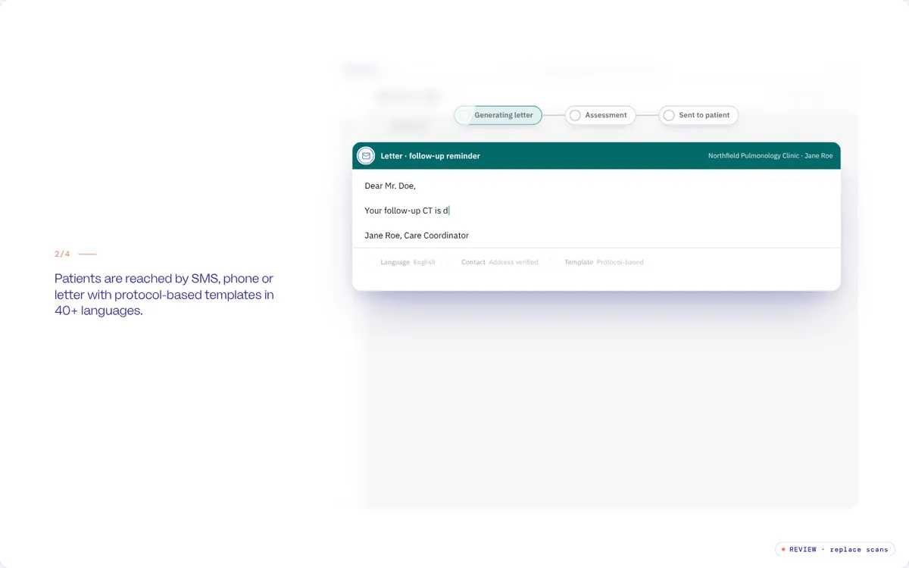
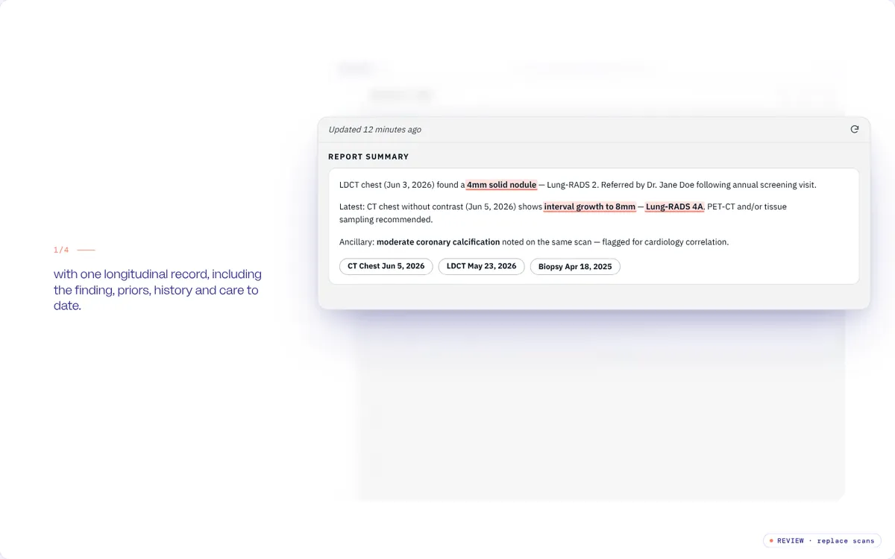
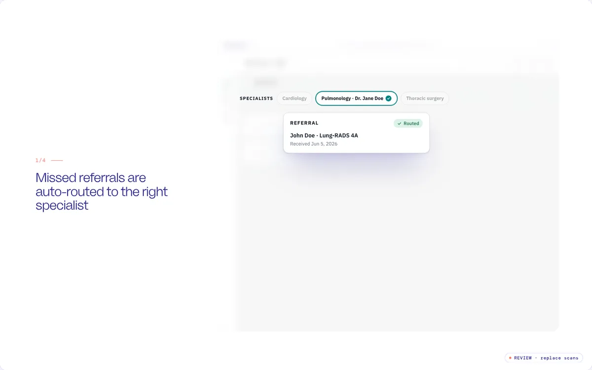
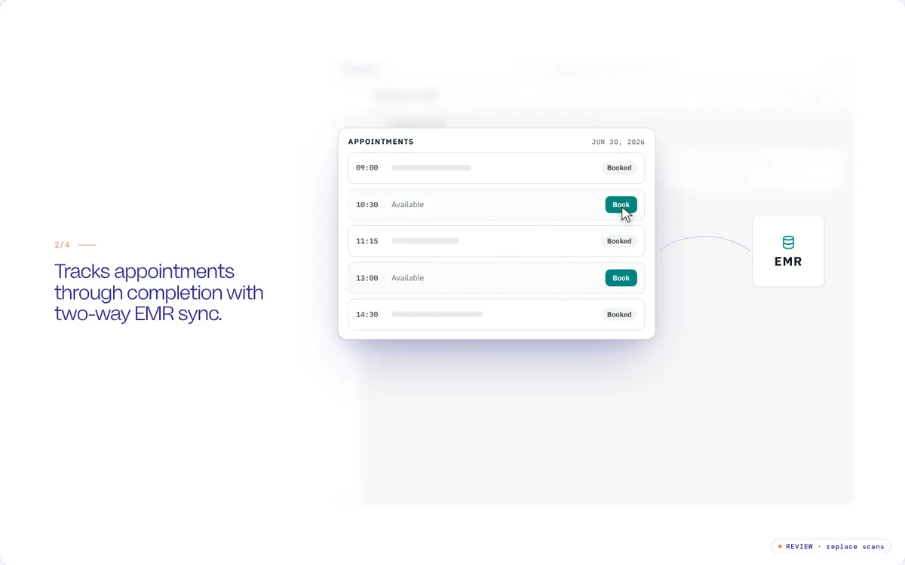
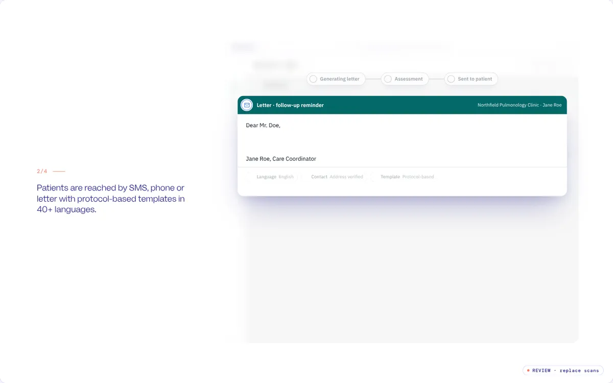
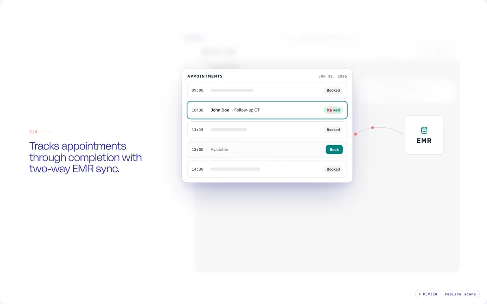
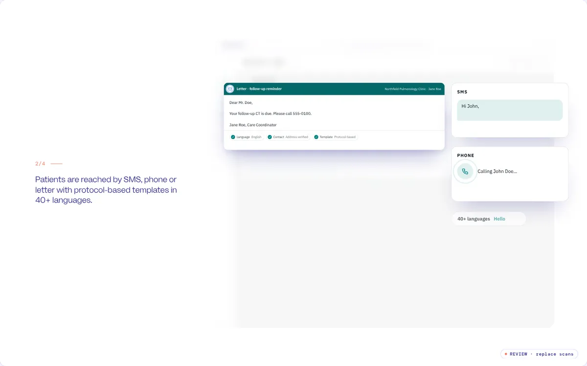
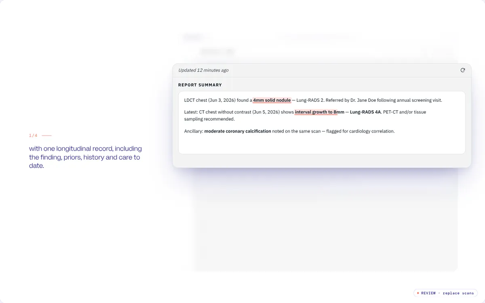
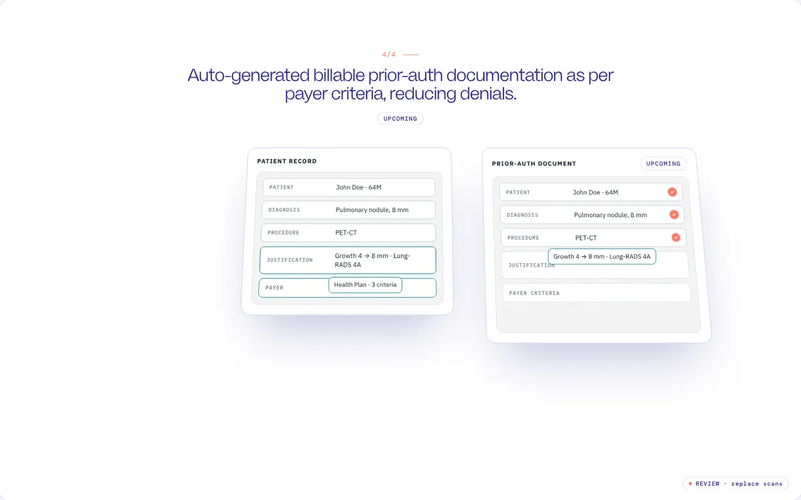
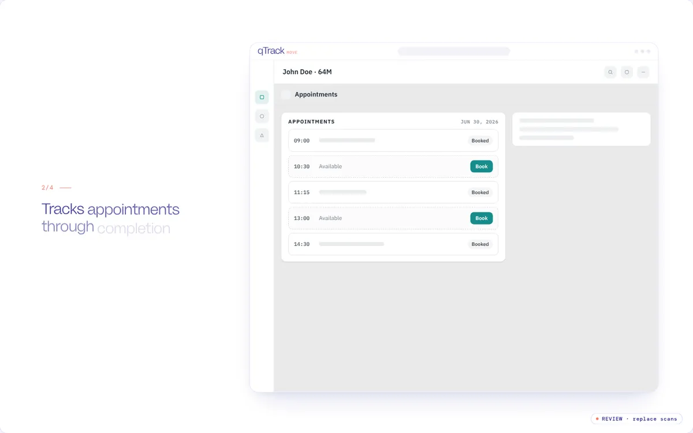
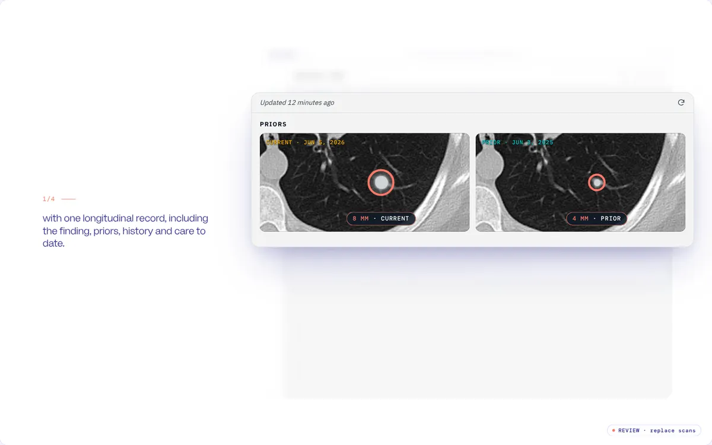
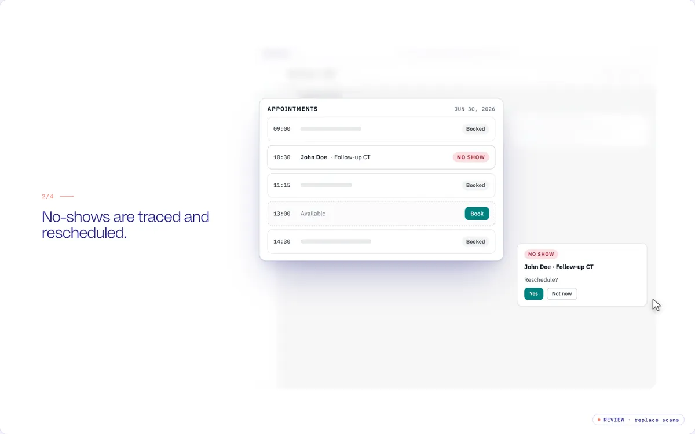
Removed · CH1 During the visit
- Back arrow, header skeleton bars, the "Fever visit" window chrome (now the shell's view title)
- Vitals (Temperature, Pulse, Blood pressure, SpO₂): two grey placeholder tiles
- Treatment-plan header and every other field
- Peach→lavender gradients on the listening bar, avatar and text box: flat Lavender tint, Peach waveform
Removed · CH2 In real time
- The blurred full-screen visit behind the card: replaced by the qTrack pre-blurred shell at 35%
- The card's gradient fill and pink border: plain qTrack card
- "Added to treatment plan" text on the accepted bar (the next beat shows it)
- "Test before treating · national malaria guideline" on the row: the row reads "Malaria RDT · Recommendation accepted"
Removed · CH3 After the visit
- The five extra call rows (the list is 3 rows: Reached · LIVE · Pending)
- The halo rings and gradient waveform on the LIVE row: teal call icon, Peach mini-waveform
- Gradient borders and fills on the answer bubble and chips: qTrack bubble and chip styles
Removed · CH4 Across facilities
- Fever, Diarrhoea, Cough and Headache trend cards: two grey placeholders
- "Trends by symptom & disease" overline, the Mocuba district / Last 12 weeks filters
- Map legend and choropleth: monochrome Lavender map, only Mocuba turns Peach
- The second (overview) Malaria chart, its legend, "early signal" marker and last-2-weeks box
- Axis numbers and week labels on the chart; the dashed threshold and its label stay